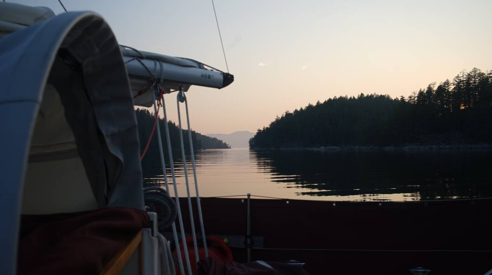
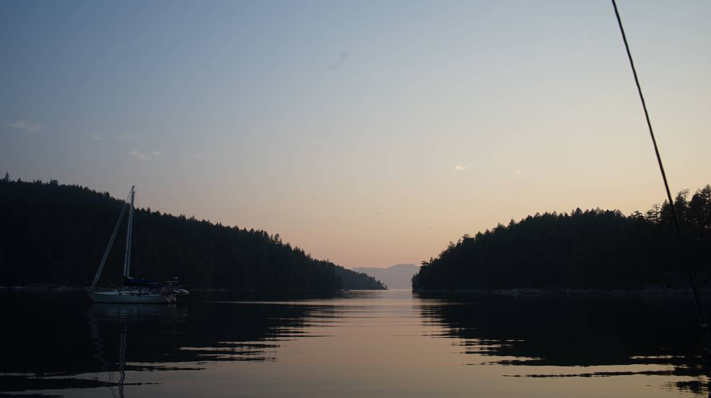
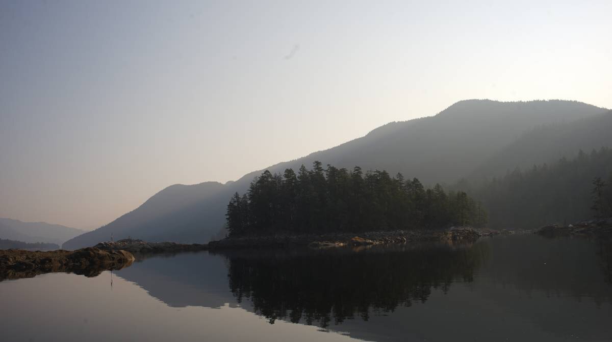

ballet bay
Note. What we refer to on this page as Ballet Bay(Nelson Island), is on the traditional, stolen, unceded, overlapping and/or shared territory land of the shíshálh swíya(Sechelt) nation, as well as of the nations part of the Hul’qumi’num Treaty Group.
On the 26th of August 2023 we anchored in Ballet Bay on Nelson Island. The sky was still thick with forest fire smoke that day (see photos), and so we only made a small jump here from Sturt Bay.
There were only 2 boats at anchor when we arrived, and we dropped the hook behind them near the boat passage on the east side of the anchorage (position: 49°43.174'N, 124°10.764'W) in about 40 feet.
This anchorage is well protected from all winds. Inflow winds from Jervis Inlet do bring a breeze into the bay, but it is welcome on a hot summer day and is really not a problem at all. A lot of boats take the small boat passage but because the pass is tricky, it forces them to slow down and helps to minimize wakes.
The anchorage, while pretty, doesn't feel incredibly exclusive because many homes line its shore. A guidebook we have from the early 2000's talks about homes on the northern shore of Nelson Island, but now homes are in construction on the little island just north of ballet bay.
Still, it is a good quiet spot, and a nice stopover if traveling up or down Malaspina Strait.